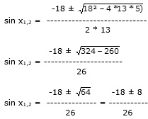

Aufgabe 234 3 sin x - 2 cos x + 3 = 0 für x > 180° 3 sin x - 2 cos x + 3 = 0 |+ 2 cos x 3 sin x + 3 = 2 cos x 3 * sin x + 3 = 2 * |2 9 * sin2 x + 18 * sin x + 9 = 4 * (1 – sin2 x) 9 * sin2 x + 18 * sin x + 9 = = 4 – 4 * sin2 x |+4 * sin2 x 13 * sin2 x + 18 * sin x + 9 = 4 |-4 13 * sin2 x + 18 * sin x + 5 = 0 A, B, C – Formel: A = 13, B = 18, C = 5

sin1,2 = sin1,2 = sin1,2 = -18 - 8 sin x1 = --------- = -1 --> x1 = 270° 26 -18 + 8 -10 sin x2 = ----------- = ----- = - 0,3846 --> 26 26 x2 = 337,4° oder 202,6° Da auf dem Weg zur Lösung quadriert wurde, könnten Lösungen hinzugekommen sein. Deswegen muss zwingend eine Probe gemacht werden. Probe für Winkel > 180°: 202,6° 3 * (-0,3846) - 2 * cos 202,6° + 3 = 0 - 1,1538 - 2 * (-0,9232) + 3 = 0 -1,1538 + 1,8464 - 3 = 0 0,6926 = 0 Widerspruch, keine Lösung 270° 3 * (- 1) + 2 * cos 270° + 3 = 0 -3 + 2 * 0 + 3 = 0 0 = 0 337,4° 3 * (-0,3846) - 2 * cos 337,4° + 3 = 0 1,1538 - 2 * (0,9232) + 3 = 0 1,1538 – 1,8464 - 3 = 0 0 = 0 Lösungsmenge L = {270°, 337,4°}